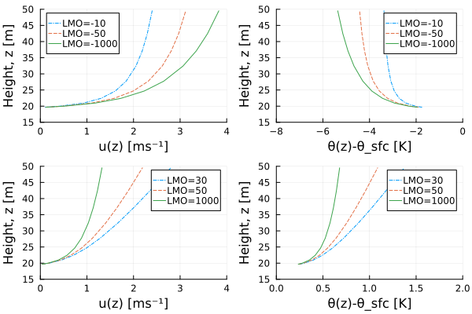

Surface Fluxes Theory
SurfaceFluxes.jl calculates turbulent surface fluxes using Monin-Obukhov Similarity Theory (MOST). This theory allows us to estimate the fluxes of momentum, heat, and moisture from the mean vertical gradients of wind speed, potential temperature, and specific humidity in the surface layer.
Monin-Obukhov Similarity Theory
The central hypothesis of MOST is that in the surface layer, turbulent fluxes are approximately constant with height and characterized by a single length scale, the Obukhov length ($L$), defined as
\[ L = - \frac{u_*^3}{\kappa B},\]
with
- the friction velocity (scaling velocity) $u_*$,
- the von Kármán constant ($\kappa \approx 0.4$), and
- the surface buoyancy flux $B$.
The Obukhov length $L$ is a dimensionless quantity that characterizes the stability of the surface layer:
- Neutral ($L \to \infty$): Shear production of turbulence dominates ($B \to 0$).
- Stable ($L > 0$): Surface cooling, turbulence is suppressed by negative buoyancy ($B < 0$).
- Unstable ($L < 0$): Surface heating, turbulence is generated by positive buoyancy ($B > 0$).
The dimensionless stability parameter $\zeta$ is defined as
\[ \zeta = \frac{z - d}{L},\]
where $z$ is the height above the surface and $d$ is the displacement height. In stable conditions, $L > 0$ and $\zeta > 0$, while in unstable conditions, $L < 0$ and $\zeta < 0$. The displacement height $d$ is a parameter that accounts for the apparent upward "displacement" of the surface due to roughness elements (e.g., vegetation, buildings, etc.)
Similarity Relations
The vertical gradients of mean variables are related to their surface fluxes through universal stability functions $(\phi_m, \phi_h)$,
\[ \frac{\kappa (z-d)}{u_*} \frac{\partial u}{\partial z} = \phi_m(\zeta)\]
and
\[ \frac{\kappa (z-d)}{\theta_*} \frac{\partial \theta}{\partial z} = \phi_h(\zeta),\]
where $\theta_*$ is the potential temperature scale. Similar relations hold for specific humidity ($q$) and other scalars.
Integrating these relations yields the profiles for wind speed and potential temperature, which are used to relate surface values to interior values (at height $\Delta z$).
The Iterative Solver
The core problem in SurfaceFluxes.jl is to find the stability parameter $\zeta$ that satisfies the MOST relations given the atmospheric state (wind speed difference $\Delta U$ between interior and surface, virtual potential temperature difference $\Delta \theta_v$, etc.).
Since $L$ depends on the fluxes (via $u_*$ and $B$), and the fluxes depend on $L$ (via the profiles), this requires an iterative solution.
Bulk Richardson Number
The solver uses the Bulk Richardson Number ($Ri_b$) as a constraint. In terms of state variables, $Ri_b$ is defined as
\[ Ri_b(\text{state}) = \frac{g (z-d) \Delta \theta_v}{\theta_{v,\text{ref}} (\Delta U)^2},\]
where $\theta_v$ is the virtual potential temperature. The bulk Richardson number $Ri_b$ is a dimensionless quantity that characterizes the stability of the surface layer. In stable conditions, $Ri_b > 0$, while in unstable conditions, $Ri_b < 0$.
Theoretical analysis shows that $Ri_b$ is universally related to $\zeta$:
\[ Ri_b(\zeta) = \zeta \frac{F_h(\zeta)}{F_m(\zeta)^2}.\]
Here, $F_m$ and $F_h$ are the dimensionless vertical profiles for momentum and heat (derived from $\phi_m$ and $\phi_h$). The bulk Richardson number $Ri_b(\zeta)$ is a monotonic function of $\zeta$, enabling a robust and efficient root-finding algorithm.
Iterative Solver (Secant Method)
The function surface_fluxes uses the Secant Method (via RootSolvers.jl) to find the root $\zeta$ of the equation
\[ Ri_b(\text{state}) - Ri_b(\zeta) = 0.\]
The solver is initialized with guesses at $\zeta = -1$ and $\zeta = 1$, spanning neutral stability. By default, the solver runs for a fixed number of iterations (maxiter=7, forced_fixed_iters=true) to ensure predictable, branch-free execution on GPUs.
For the Businger-Dyer similarity functions, a critical bulk Richardson number $Ri_{b,\text{crit}} \approx 0.21$ exists, above which no finite $\zeta$ satisfies the stability relations due to the asymptotic behavior of the integrated profile functions. In such supercritical stable conditions, the solver cannot converge to a finite root. To ensure bounded output, the solution is clamped to physical limits $\zeta \in [-100, 100]$ after iteration. While the clamped solution does not satisfy the stability equations exactly, it provides physically reasonable fluxes that smoothly approach zero as stratification increases.
Once $\zeta$ is found, the scaling parameters ($u_*, \theta_*, q_*$) and thus the fluxes of sensible heat, latent heat, and momentum (SHF, LHF, $\tau$) are computed directly.
Wind Speed and Gustiness
In conditions of very low wind speed, the standard definition of the bulk Richardson number becomes singular as the mean wind speed approaches zero. To represent sub-grid scale variability and ensure numerical stability, SurfaceFluxes.jl uses an effective wind speed that includes a "gustiness" component.
The effective wind speed difference $\Delta U$ used in the solver is:
\[ \Delta U = \max\left( \left(\Delta u^2 + \Delta v^2\right)^{1/2}, \, U_{\text{gust}} \right)\]
where $\Delta u$ and $\Delta v$ are the horizontal wind components and $U_{\text{gust}}$ is a gustiness velocity scale. This prevents the wind speed from vanishing even when the mean horizontal wind is zero (e.g., in free convection).
Supported parameterizations for $U_{\text{gust}}$:
- Constant Gustiness: A fixed minimum wind speed value.
- Deardorff Gustiness: Proportional to the convective velocity scale $w_*$, capturing gustiness induced by boundary layer eddies.
Discretization Schemes
SurfaceFluxes.jl supports two interpretations of the boundary layer profiles, handled by the UniversalFunctions module:
- Point Value Scheme (Finite Difference): Assumes that the inputs represent values at exact heights $z$.
- Layer Average Scheme (Finite Volume): Assumes that the inputs represent volume-averaged values over a grid cell. This requires modified universal functions ($\Psi$) as derived by (Nishizawa & Kitamura (2018)).
See Universal Functions for details on the specific parameterizations.
Profile Recovery
While the primary goal of the iterative solver is to compute surface fluxes from state variables, strictly speaking, MOST defines the full vertical profiles of these variables. Once the fluxes and stability length $L$ are known, the value of any variable at an arbitrary height within the surface layer can be recovered using compute_profile_value.
This is particularly useful for diagnosing variables at specific heights (e.g., 2 m or 10m) or for coupling with other model components that require state variables at different levels.
compute_profile_value(
param_set,
L_MO,
z0,
Δz_eff,
scale,
val_sfc,
transport,
)This calculates the value of a variable at the effective aerodynamic height Δz_eff based on its surface value val_sfc, its roughness length z0, and its similarity scale scale (e.g., $u_*$ or $\theta_*$). For a complete list of functions and their arguments, please refer to the API Reference.
Here and throughout, the input argument Δz_eff is the effective height above the surface, i.e., $z - d$.
Example
The following figure demonstrates profile recovery using the universal functions (reproducing Figure 6.4 from Bonan (2019)). The profiles are computed with the Businger-Dyer parameterization for both stable and unstable conditions and with a displacement height of $d = 19\,\mathrm{m}$.
Profile recovery for wind speed (left) and potential temperature (right) under different stability conditions. The figure shows profiles for unstable conditions (LMO = -10, -50, -1000) and stable conditions (LMO = 30, 50, 1000), demonstrating how the universal functions capture the stability dependence of the boundary layer structure.

References
- Bonan, G. (2019). Climate Change and Terrestrial Ecosystem Modeling. Cambridge University Press. ISBN: 978-1-107-04378-7